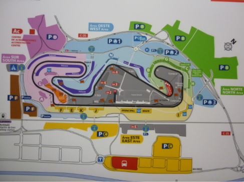
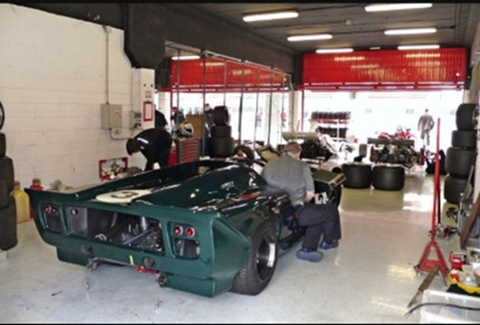

Historia del circuito
El Circuit de Barcelona-Catalunya está situado en Montmeló, cerca de Barcelona. Fue inaugurado en 1991 y ese mismo año acogió su primer Gran Premio de Fórmula 1.
Características del circuito
| Característica | Dato |
|---|---|
| Longitud | 4,657 km |
| Número de curvas | 14 |
| Vueltas | 66 |
| Distancia de carrera | 307,236 km |
Instalaciones
- Boxes para los equipos
- Tribunas para los espectadores
- Zona de paddock
- Sala de prensa
Imágenes

